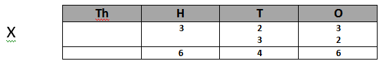
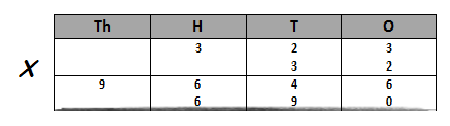
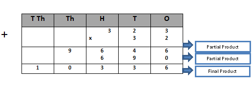
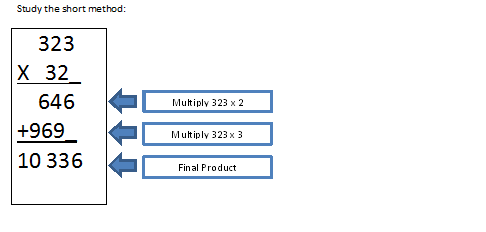

There are 24 bananas in a basket. How many bananas are there in 32 baskets?
What is asked for in the problem? What operation are you going to use? How will you solve the given problem?
To solve the problem , you need to multiply 323 by 32. The number sentence is 32 x 323 = n . Study the solution below using the place value chart.
Step 1 : Multiply 3 hundreds , 2 tens , and 3 ones by 2 ones.
Step 2 : Multiply 3 hundreds , 2 tens and 3 ones by 3 tens.
Step 3 : add the partial products.
So there are 10 336 bananas in 32 baskets.
